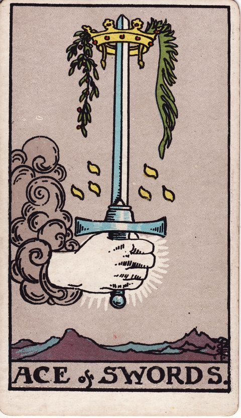
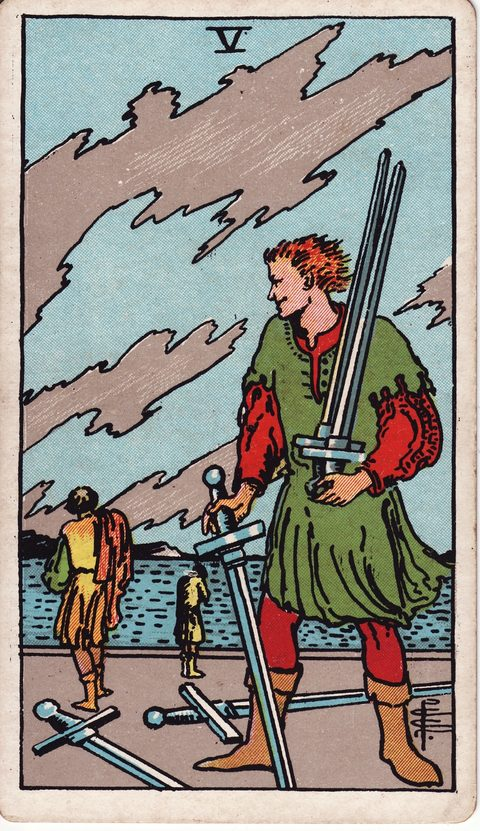
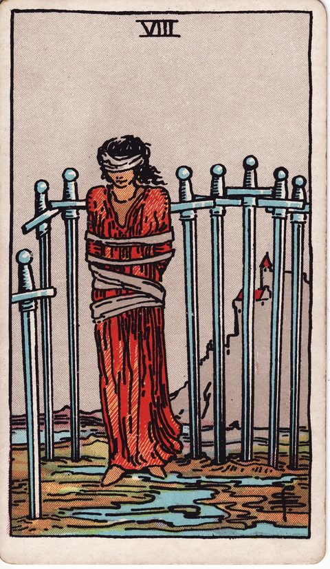
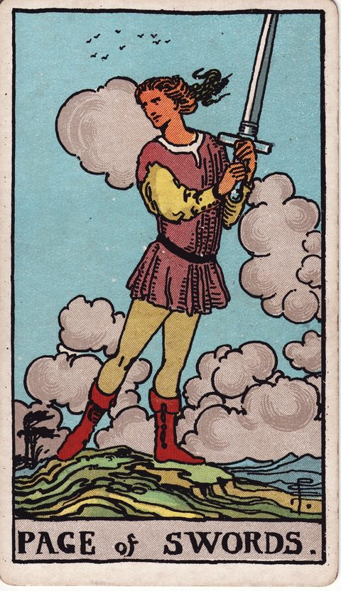
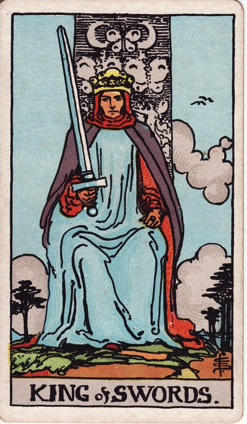

SWORDS · AIR
Swords meanings (14 cards)
Swords correspond to the element of air and govern thought, judgment, words, and conflict. The numbered cards from Ace to Ten depict a clear insight at the start, then uncertainty, heartache, maneuvering, anxiety, and finally a break and a fresh start — and many of the images are stark. The court cards show what kind of person you are in how you use intellect and words. When Swords appear as you face a decision, they are useful as a viewpoint for checking, “Am I separating facts from assumptions?” and “Is fear clouding my judgment?” This is a suit that is especially powerful for choices where you need to face a difficult situation directly, sharpen your thinking, and draw a line. Even a stark image can be read as a sign that says, “Here is a risk to notice — and a chance to think again.” Try reflecting on which stage your thinking is at within the flow of the numbers.















Use the viewpoint of Swords to lay your own two options side by side.
Draw a card and organize your decisionSwords keywords at a glance
- Ace of Swords: upright "Thoughts come together, Making things clear, Deciding" / reversed "Thoughts will not settle, Saying too much, Missing information"
- Two of Swords: upright "Cannot decide, Hesitation, Waiting for an answer" / reversed "Indecision moves, Too much information, Facing it"
- Three of Swords: upright "Sadness, Disappointment, A hurting heart" / reversed "Pain easing, Talking about feelings, Lingering sadness"
- Four of Swords: upright "Resting, Settling, Organizing your thoughts" / reversed "Cannot rest, Beginning to move, Noticing tiredness"
- Five of Swords: upright "Conflict, Winning and losing, What is lost" / reversed "Ending the conflict, Stepping closer, The courage to withdraw"
- Six of Swords: upright "Changing place, Borrowing help, Toward calmer ground" / reversed "Cannot leave, The past on your mind, Cannot move"
- Seven of Swords: upright "Ingenuity, Advancing alone, Secrets" / reversed "Confessing, Noticing a lie, Starting over"
- Eight of Swords: upright "Cannot move, Assumptions, Cannot choose" / reversed "Noticing the assumption, Borrowing help, One step forward"
- Nine of Swords: upright "Worry, Overthinking, Blaming yourself" / reversed "Talking about anxiety, Feelings lightening, Accepting help"
- Ten of Swords: upright "Your limit, An ending, Ending and resting" / reversed "Rebuilding little by little, Resting, Caught by the past"
- Page of Swords: upright "Looking into it, Noticing, Asking questions" / reversed "Gossip, Assuming you know, Saying too much"
- Knight of Swords: upright "Moving quickly, Decisiveness, Advancing straight" / reversed "Jumping to conclusions, Harsh words, Not seeing around you"
- Queen of Swords: upright "Speaking plainly, Calm, Seeing things clearly" / reversed "Too strict, Closing your heart, Jumping to conclusions"
- King of Swords: upright "Fair judgment, Rules, Showing your reasons" / reversed "Imposing rightness, A cold attitude, Making people obey"